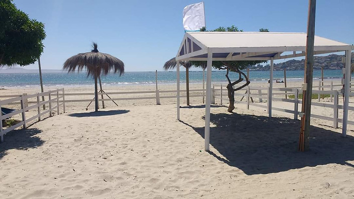

Sitio con baño compartido
Vive la experiencia de acampar junto al mar, rodeado de naturaleza y tranquilidad. Una alternativa para disfrutar de Tongoy en familia.

Disfruta de la naturaleza con comodidad
Nuestros sitios con baño compartido te permiten disfrutar de la experiencia de acampar junto al mar, con acceso a instalaciones sanitarias compartidas.
Capacidad por sitio
Cada sitio de camping está considerado para un máximo de 6 personas. En caso de grupos de más de 6 personas, podrán aplicarse cargos adicionales. Consulta las condiciones directamente con Camping Tongoy antes de realizar tu reserva.
Consulta directamente con el camping sobre equipamiento adicional y disponibilidad de electricidad.
Horarios de tu estadía
Horarios sujetos a confirmación para esta categoría.
Información importante
- Los baños y duchas son de uso compartido entre huéspedes.
- Cada sitio está considerado para hasta 6 personas. Grupos más grandes pueden estar sujetos a cargos adicionales.
- Confirma qué equipamiento está incluido en tu reserva.
- Las tarifas pueden variar según la fecha de estadía.
- Las reservas se coordinan directamente con Camping Tongoy por WhatsApp.